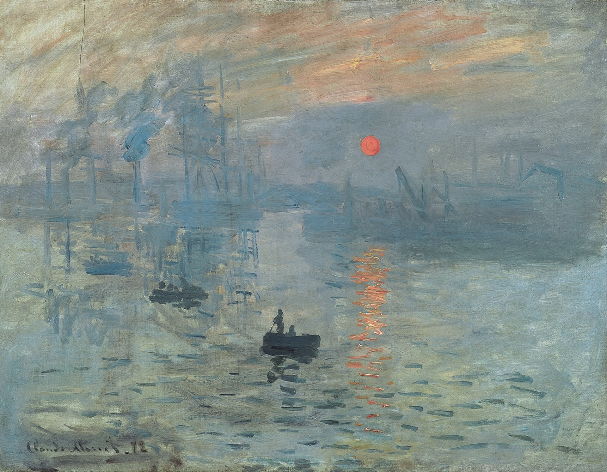

日出·印象 Impression, Sunrise
莫奈 · 1872年 · 巴黎玛摩丹·莫奈美术馆
Claude Monet · 1872 · Musée Marmottan Monet, Paris
图片：Wikimedia Commons，公有领域 / Image: Wikimedia Commons, public domain

发现 · Discover
橙色的太阳 The orange sun
雾里升起一轮橙红色的太阳，这是整幅画的焦点。
An orange-red sun rises through the mist, the focal point of the whole painting.
两条小船 Two small boats
前景是两条小划船，在灰蓝色的水面上，只用几笔就画了出来。
In the foreground are two small rowing boats, painted in just a few strokes on the grey-blue water.
雾里的港口 A port in the mist
远处的船桅、吊车和烟囱，在雾里若隐若现。这是一个现代的工业港口。
Masts, cranes and chimneys loom through the mist in the distance. This is a modern industrial port.
水上的倒影 Reflections
太阳在水面上留下一道道橙色的倒影。莫奈最感兴趣的，是光和水上的倒影。
The sun leaves streaks of orange on the water. What interested Monet most was light and its reflections on water.
窗口 From a window
1872年11月，莫奈在家乡勒阿弗尔，从港口边一家酒店的窗口画下了这片景色。
In November 1872, in his home town of Le Havre, Monet painted this view from the window of a hotel on the quayside.
“写‘印象’吧” “Put Impression”
有人问他画名，他觉得这实在不像勒阿弗尔的风景，就说：“写‘印象’吧。”
Asked for a title, he felt it could hardly pass for a view of Le Havre, so he said: “Put Impression.”
故事 · The story
ACT I 第一幕 · 港口的早晨 Morning at the port
1872年11月，莫奈回到家乡勒阿弗尔。一天清晨，他推开酒店的窗户，画下了雾中苏醒的港口。
In November 1872, Monet was back in his home town of Le Havre. Early one morning, he opened his hotel window and painted the port waking up in the mist.
1872年 · 巴黎玛摩丹·莫奈美术馆 / 1872 · Musée Marmottan Monet, Paris
ACT II 第二幕 · 一个名字 A name
1874年，这幅画在巴黎的一次独立画展上展出。评论家路易·勒鲁瓦借用画名，写了一篇嘲讽的评论，标题是“印象派画家的展览”。没想到，“印象派”从此成了这个画派的名字。
In 1874, the painting was shown at an independent exhibition in Paris. The critic Louis Leroy borrowed its title for a mocking review, “The Exhibition of the Impressionists”. The name stuck, and gave the movement its name.
1872年 · 巴黎玛摩丹·莫奈美术馆 / 1872 · Musée Marmottan Monet, Paris
ACT III 第三幕 · 被偷走又回来 Stolen and returned
1985年10月，几个持枪的人在大白天闯进玛摩丹美术馆，偷走了这幅画。五年后，它被找了回来，1991年重新回到展厅。
In October 1985, armed men broke into the Musée Marmottan in broad daylight and stole the painting. It was recovered five years later, and returned to the galleries in 1991.
1872年 · 巴黎玛摩丹·莫奈美术馆 / 1872 · Musée Marmottan Monet, Paris
一个印象，成了一个画派的名字。 One impression gave a movement its name.
作品档案 · Artwork record
| 画家（生卒年） · Artist (dates) | 克劳德·莫奈（1840–1926） / Claude Monet (1840–1926) |
|---|---|
| 画名 · Title | 日出·印象 / Impression, Sunrise (Impression, soleil levant) |
| 年份 · Date | 1872年 / 1872 |
| 材质 · Medium | 布面油画 / Oil on canvas |
| 尺寸 · Dimensions | 50 × 65 厘米 / 50 × 65 cm |
| 收藏地 · Collection | 巴黎玛摩丹·莫奈美术馆 / Musée Marmottan Monet, Paris |
关于画家 · About the artist
克劳德·莫奈（1840–1926），法国印象派最重要的风景画家。他生于巴黎，在勒阿弗尔长大。普法战争期间（1870–71）曾移居伦敦。1883年起住在吉维尼，晚年专注于在不同光线下反复画同一主题，比如干草堆、鲁昂大教堂和他自己的花园。
Claude Monet (1840–1926) was the leading French Impressionist landscape painter. Born in Paris, he grew up in Le Havre and moved to London during the Franco-Prussian War (1870–71). From 1883 he lived in Giverny, where he painted series of a single subject under different light: haystacks, Rouen Cathedral and his own garden.